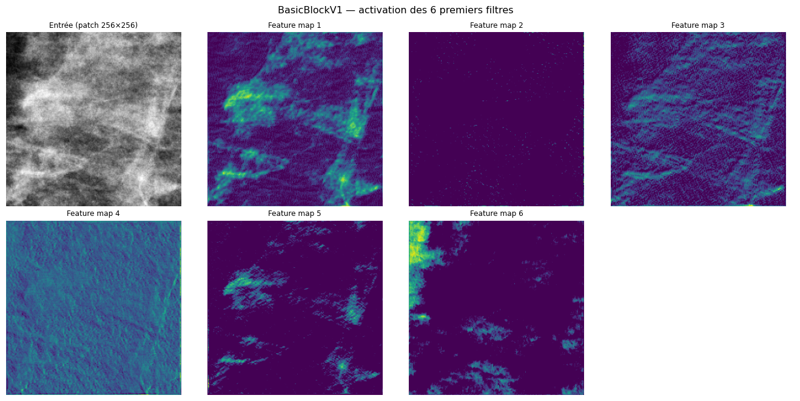
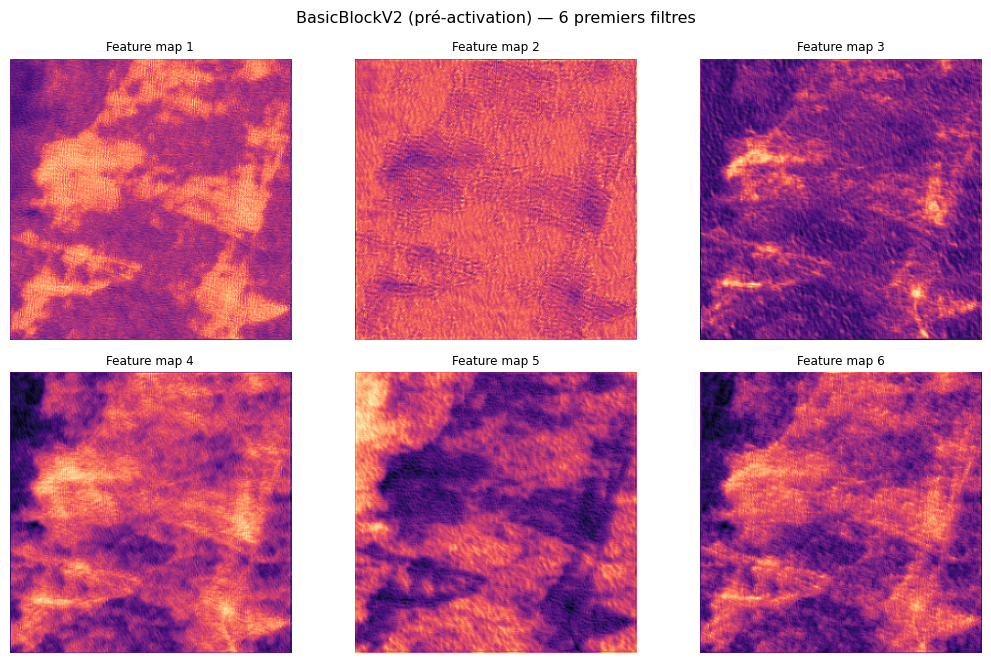
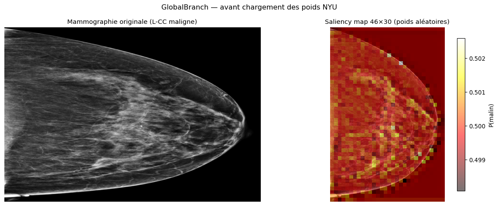
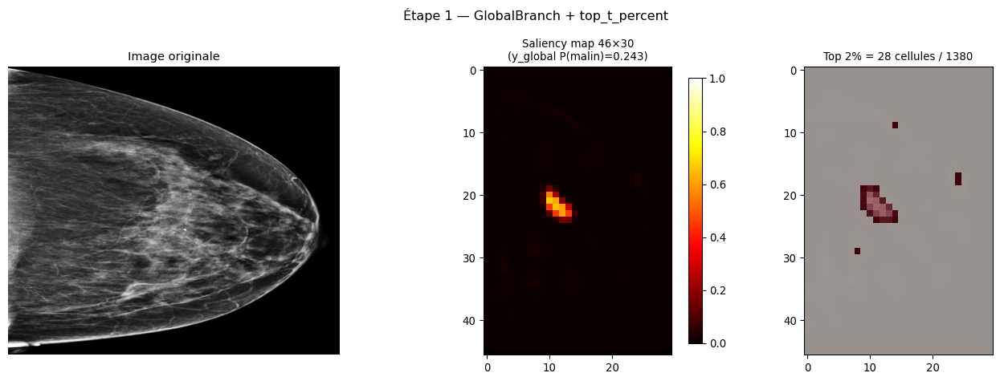
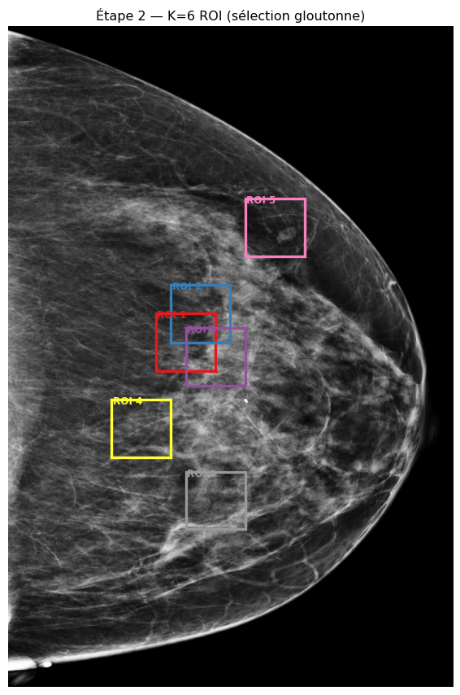
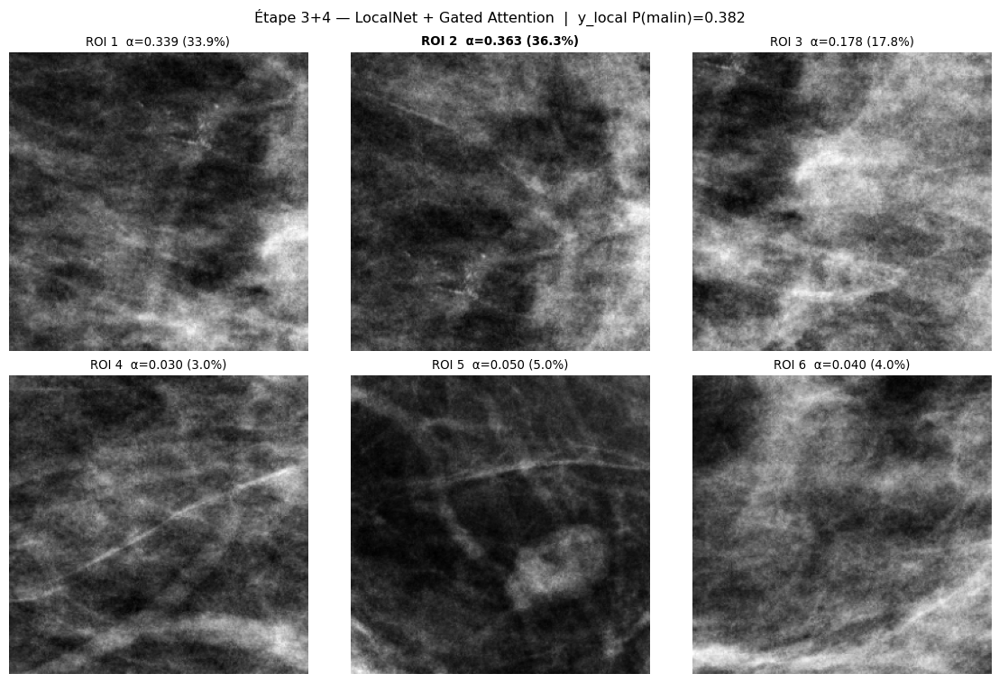
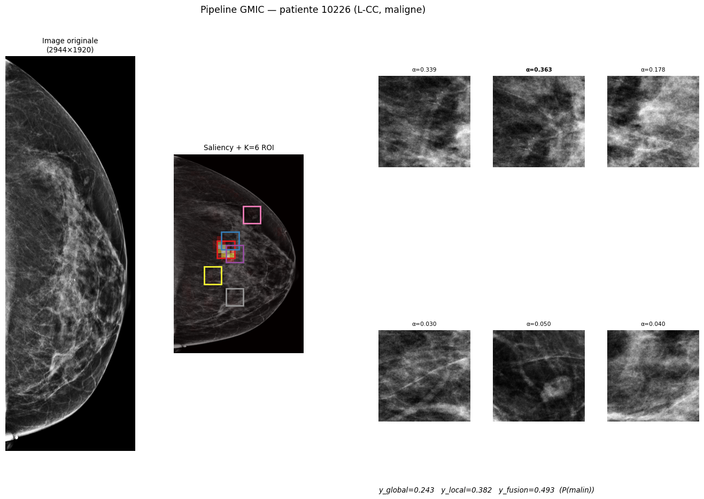

Device : cuda
Image : preprocess_image/demo/cropped_images/10226/530620473.pngGMIC — De la brique de base au pipeline complet
BasicBlock → Backbones → Assemblage → Inférence sur une mammographie
Introduction
Ce notebook reconstruit GMIC (Globally-aware Multiple Instance Classifier, Shen et al. 2020) couche par couche — des briques de base jusqu’à l’inférence sur une vraie mammographie.
Le fil conducteur :
| Partie | Ce qu’on construit |
|---|---|
| I | BasicBlockV1 (LocalNet) et BasicBlockV2 (GlobalNet) |
| II | LocalNetwork et GlobalNetwork — les deux backbones |
| III | ScratchGMIC — l’assemblage complet, poids NYU chargés |
| IV | Forward pas à pas : saliency → ROI → patches → attention → fusion |
Le pipeline utilise scripts/gmic_from_scratch.py — une réécriture en nn.Module standards qui charge exactement les mêmes poids NYU que le code officiel.
Partie I — La brique de base : BasicBlock
I.1 — Les quatre primitives
Chaque BasicBlock assemble quatre opérations PyTorch. Voici leur rôle en pratique.
Code
# Conv2d : glisse 64 kernels 3×3 sur l'image, produit 64 feature maps
conv = nn.Conv2d(1, 4, kernel_size=3, stride=1, padding=1, bias=False)
print(f"Conv2d → {sum(p.numel() for p in conv.parameters())} params "
f"(shape poids : {tuple(conv.weight.shape)})")
# BatchNorm : recentre + rescale les activations par canal après chaque conv
bn = nn.BatchNorm2d(4)
print(f"BatchNorm→ {sum(p.numel() for p in bn.parameters())} params "
f"(γ et β apprenables, 1 paire par canal)")
# ReLU : met à zéro les activations négatives — introduit la non-linéarité
relu = nn.ReLU(inplace=True)
print(f"ReLU → 0 param (opération sans poids)")
# conv3x3 : raccourci de Conv2d(kernel=3, padding=1) utilisé dans les blocs
c3 = conv3x3(4, 8, stride=1)
print(f"conv3x3 → {sum(p.numel() for p in c3.parameters())} params "
f"(4 canaux → 8 canaux)")Conv2d → 36 params (shape poids : (4, 1, 3, 3))
BatchNorm→ 8 params (γ et β apprenables, 1 paire par canal)
ReLU → 0 param (opération sans poids)
conv3x3 → 288 params (4 canaux → 8 canaux)I.2 — BasicBlockV1 : la brique du LocalNetwork
BasicBlockV1 empile deux conv3x3 → BN → ReLU et ajoute une connexion résiduelle (skip connection) : la sortie est F(x) + x. En pratique cela rend les gradients plus stables et permet d’entraîner des réseaux profonds sans dégradation.
Code
from src.modeling.modules import BasicBlockV1
block_v1 = BasicBlockV1(inplanes=64, planes=64)
n = sum(p.numel() for p in block_v1.parameters())
print(f"BasicBlockV1(64→64) : {n:,} paramètres")
print(block_v1)BasicBlockV1(64→64) : 73,984 paramètres
BasicBlockV1(
(conv1): Conv2d(64, 64, kernel_size=(3, 3), stride=(1, 1), padding=(1, 1), bias=False)
(bn1): BatchNorm2d(64, eps=1e-05, momentum=0.1, affine=True, track_running_stats=True)
(relu): ReLU(inplace=True)
(conv2): Conv2d(64, 64, kernel_size=(3, 3), stride=(1, 1), padding=(1, 1), bias=False)
(bn2): BatchNorm2d(64, eps=1e-05, momentum=0.1, affine=True, track_running_stats=True)
)Visualisation — feature maps avant et après le bloc :
Code
if _DEMO_IMG:
img = imageio.imread(_DEMO_IMG).astype(np.float32)
img = (img - img.mean()) / max(img.std(), 1e-5)
# Crop 256×256 au centre pour le LocalNet
h, w = img.shape
crop = img[h//2 - 128: h//2 + 128, w//2 - 128: w//2 + 128]
x = torch.tensor(crop[None, None]) # (1, 1, 256, 256)
# Adapte le bloc à 1 canal d'entrée (GMIC utilise 64, ici on visualise avec 1)
stem = nn.Conv2d(1, 64, kernel_size=3, padding=1, bias=False)
with torch.no_grad():
h_in = stem(x) # (1, 64, 256, 256)
h_out = block_v1(h_in) # (1, 64, 256, 256)
fig, axes = plt.subplots(2, 4, figsize=(14, 7))
axes[0, 0].imshow(crop, cmap="gray")
axes[0, 0].set_title("Entrée (patch 256×256)", fontsize=9)
axes[0, 0].axis("off")
for i, ax in enumerate(axes.flat[1:7]):
ax.imshow(h_out[0, i].detach().numpy(), cmap="viridis")
ax.set_title(f"Feature map {i+1}", fontsize=9)
ax.axis("off")
axes[1, 3].axis("off")
plt.suptitle("BasicBlockV1 — activation des 6 premiers filtres", fontsize=12)
plt.tight_layout()
plt.show()
I.3 — BasicBlockV2 : la brique du GlobalNetwork
BasicBlockV2 inverse l’ordre BN → ReLU → Conv (pré-activation) au lieu de Conv → BN → ReLU. Avantage : la connexion résiduelle transporte des valeurs brutes sans passer par la normalisation, ce qui améliore le flux de gradient.
Code
from src.modeling.modules import BasicBlockV2
block_v2 = BasicBlockV2(inplanes=16, planes=16)
n = sum(p.numel() for p in block_v2.parameters())
print(f"BasicBlockV2(16→16) : {n:,} paramètres")
# Comparaison de l'ordre des opérations
print("\nV1 : Conv → BN → ReLU → Conv → BN (+skip) → ReLU final")
print("V2 : BN → ReLU → Conv → BN → ReLU → Conv (+skip)")BasicBlockV2(16→16) : 4,672 paramètres
V1 : Conv → BN → ReLU → Conv → BN (+skip) → ReLU final
V2 : BN → ReLU → Conv → BN → ReLU → Conv (+skip)Code
if _DEMO_IMG:
stem_v2 = nn.Conv2d(1, 16, kernel_size=3, padding=1, bias=False)
with torch.no_grad():
h_in2 = stem_v2(x)
h_out2 = block_v2(h_in2)
fig, axes = plt.subplots(2, 3, figsize=(11, 7))
for i, ax in enumerate(axes.flat[:6]):
ax.imshow(h_out2[0, i].detach().numpy(), cmap="magma")
ax.set_title(f"Feature map {i+1}", fontsize=9)
ax.axis("off")
plt.suptitle("BasicBlockV2 (pré-activation) — 6 premiers filtres", fontsize=12)
plt.tight_layout()
plt.show()
Partie II — Les deux backbones
II.1 — LocalNetwork : ResNetV1(64 filtres)
Le LocalNetwork reçoit des patches 256×256 extraits autour des zones suspectes. Il empile des BasicBlockV1 avec un nombre croissant de filtres, puis applique un global average pooling pour produire un vecteur de 512 dimensions par patch.
Code
from src.modeling.modules import ResNetV1
local_net = ResNetV1(64, BasicBlockV1, [2, 2, 2, 2], 3)
# args : initial_filters=64, block, layers, input_channels=3
n = sum(p.numel() for p in local_net.parameters())
print(f"LocalNetwork (ResNetV1) : {n:,} paramètres")
print()
# Trajectoire d'un patch 256×256
if _DEMO_IMG:
patch = torch.tensor(crop[None, None]).expand(-1, 3, -1, -1) # (1, 3, 256, 256)
with torch.no_grad():
feat = local_net(patch) # (1, 512, 1, 1) → poolé
print(f"Entrée : {tuple(patch.shape)}")
print(f"Sortie : {tuple(feat.shape)} → vecteur de {feat.numel()} features par patch")LocalNetwork (ResNetV1) : 11,176,512 paramètres
Entrée : (1, 3, 256, 256)
Sortie : (1, 512, 8, 8) → vecteur de 32768 features par patchRésolution à chaque stage du LocalNetwork :
stem conv 256×256 → 128×128 (stride 2)
layer1 → 128×128 (stride 1)
layer2 → 64×64 (stride 2)
layer3 → 32×32 (stride 2)
layer4 → 16×16 (stride 2)
global avg pool → 1×1 → vecteur 512-dimII.2 — GlobalNetwork : ResNetV2(16 filtres) + SaliencyHead
Le GlobalNetwork reçoit l’image entière (2944×1920) et produit une carte de saillance (46×30) indiquant la probabilité de malignité pour chaque cellule de la grille. Il utilise 16 filtres initiaux (vs 64 pour le LocalNet) pour tenir en VRAM malgré la haute résolution.
On utilise GlobalBranch de gmic_from_scratch — c’est exactement le même backbone mais en nn.Module standard (sans la mécanique AbstractMILUnit du code NYU).
Code
from scripts.gmic_from_scratch import GlobalBranch
global_branch = GlobalBranch().to(DEVICE).eval()
n = sum(p.numel() for p in global_branch.parameters())
print(f"GlobalBranch (ResNetV2 + SaliencyHead) : {n:,} paramètres")
if _DEMO_IMG:
img_full = imageio.imread(_DEMO_IMG).astype(np.float32)
img_full = (img_full - img_full.mean()) / max(img_full.std(), 1e-5)
img_t = torch.tensor(img_full[None, None]).to(DEVICE)
with torch.no_grad():
h_g, saliency_raw = global_branch(img_t) # h_g : (1,256,46,30) saliency : (1,2,46,30)
print(f"Entrée : {tuple(img_t.shape)} (image full-resolution)")
print(f"h_g : {tuple(h_g.shape)} (feature map backbone)")
print(f"saliency: {tuple(saliency_raw.shape)} (46×30 CAM, 2 classes)")GlobalBranch (ResNetV2 + SaliencyHead) : 2,800,048 paramètres
Entrée : (1, 1, 2944, 1920) (image full-resolution)
h_g : (1, 256, 46, 30) (feature map backbone)
saliency: (1, 2, 46, 30) (46×30 CAM, 2 classes)Code
if _DEMO_IMG:
sal_malign = saliency_raw[0, 1].cpu().numpy()
fig, axes = plt.subplots(1, 2, figsize=(12, 5))
axes[0].imshow(imageio.imread(_DEMO_IMG), cmap="gray", aspect="auto")
axes[0].set_title("Mammographie originale (L-CC maligne)", fontsize=11)
axes[0].axis("off")
axes[1].imshow(imageio.imread(_DEMO_IMG), cmap="gray", aspect="auto")
overlay = axes[1].imshow(
sal_malign, cmap="hot", alpha=0.55,
extent=[0, img_t.shape[3], img_t.shape[2], 0],
)
plt.colorbar(overlay, ax=axes[1], fraction=0.03, label="P(malin)")
axes[1].set_title("Saliency map 46×30 (poids aléatoires)", fontsize=11)
axes[1].axis("off")
plt.suptitle("GlobalBranch — avant chargement des poids NYU", fontsize=12)
plt.tight_layout()
plt.show()
print("→ La saliency sera significative après chargement des poids NYU (Partie III)")
→ La saliency sera significative après chargement des poids NYU (Partie III)Partie III — L’assemblage : ScratchGMIC
ScratchGMIC remplace la classe GMIC officielle (dont l’architecture AbstractMILUnit accroche les poids sur le module parent). Ici tout est en nn.Module standard : 4 sous-modules + 3 fonctions pures.
| Étage | Classe / fonction | Poids NYU (préfixe) |
|---|---|---|
| GlobalBranch | GlobalBranch |
ds_net.* + left_postprocess_net.* |
| top-T% | fonction pure | — |
| Sélection ROI | 3 fonctions pures | — |
| LocalBranch | LocalBranch |
dn_resnet.* |
| GatedAttention | GatedAttention |
mil_attn_V/U/w.* + classifier_linear.* |
| Fusion | Fusion |
fusion_dnn.* |
III.1 — Instanciation et chargement des poids NYU
Code
from scripts.gmic_from_scratch import ScratchGMIC, load_nyu_weights
model = ScratchGMIC(
K=6,
crop_shape=(256, 256),
cam_size=(46, 30),
percent_t=0.02,
num_classes=2,
device_type="gpu" if DEVICE.type == "cuda" else "cpu",
gpu_number=0,
).to(DEVICE).eval()
NYU_CKPT = os.path.join(PROJECT_DIR, "GMIC/models/sample_model_1.p")
load_nyu_weights(model, NYU_CKPT, device=DEVICE)
n_total = sum(p.numel() for p in model.parameters())
print(f"\nScratchGMIC : {n_total:,} paramètres au total")Chargé : 258 clés remappées depuis sample_model_1.p
ignorées (non utilisées par GMIC) : 1
manquantes (attendues mais absentes) : 0
inattendues (présentes mais non utilisées) : 0
ScratchGMIC : 14,110,322 paramètres au totalLe load_nyu_weights remappe 258 clés (la 259e, shared_rep_filter, est ignorée car non utilisée dans le forward). Le chargement en strict=True garantit qu’aucune clé n’est manquante ou en trop.
III.2 — Sanity check : sorties identiques à l’original
from src.modeling.gmic import GMIC
params_nyu = {
"device_type": "gpu" if DEVICE.type == "cuda" else "cpu",
"gpu_number": 0,
"cam_size": (46, 30),
"K": 6,
"crop_shape": (256, 256),
"percent_t": 0.02,
"use_v1_global": False,
"post_processing_dim": 256,
"num_classes": 2,
}
model_orig = GMIC(params_nyu).to(DEVICE).eval()
ckpt_orig = torch.load(NYU_CKPT, map_location=DEVICE, weights_only=False)
model_orig.load_state_dict(ckpt_orig, strict=False)
with torch.no_grad():
y_scratch = model(img_t)
y_orig = model_orig(img_t)
diff = (y_scratch - y_orig).abs().max().item()
print(f"Différence max y_fusion (scratch vs original) : {diff:.2e}")
print("✓ Bit-exact" if diff < 1e-5 else "✗ Divergence détectée")Différence max y_fusion (scratch vs original) : 0.00e+00
✓ Bit-exactPartie IV — Forward pas à pas
Étape 1 — Saliency map et agrégation top-T%
Le GlobalBranch produit une carte 46×30. Les top 2% des cellules (≈28 sur 1380) forment le score global y_global par max-pooling.
Code
sal = model.saliency[0, 1].cpu().numpy() # (46, 30) — P(malin) par cellule
y_global_score = model.y_global[0, 1].item()
# Masque top-T%
threshold = np.percentile(sal, 100 * (1 - 0.02))
mask_top = sal >= threshold
fig, axes = plt.subplots(1, 3, figsize=(14, 5))
axes[0].imshow(imageio.imread(_DEMO_IMG), cmap="gray", aspect="auto")
axes[0].set_title("Image originale", fontsize=11)
axes[0].axis("off")
im = axes[1].imshow(sal, cmap="hot", vmin=0, vmax=1)
plt.colorbar(im, ax=axes[1], fraction=0.04)
axes[1].set_title(f"Saliency map 46×30\n(y_global P(malin)={y_global_score:.3f})", fontsize=10)
axes[2].imshow(sal, cmap="gray")
axes[2].imshow(mask_top, cmap="Reds", alpha=0.6)
axes[2].set_title(f"Top 2% = {mask_top.sum()} cellules / {sal.size}", fontsize=10)
plt.suptitle("Étape 1 — GlobalBranch + top_t_percent", fontsize=12)
plt.tight_layout()
plt.show()
Étape 2 — Sélection gloutonne des K=6 ROI
L’algorithme sélectionne les 6 zones non-chevauchantes avec les scores de saillance les plus élevés (sélection gloutonne avec masquage progressif).
Code
img_orig = imageio.imread(_DEMO_IMG)
locs = model.locations[0] # (6, 2) — numpy array, coins top-left en pixels
fig, ax = plt.subplots(figsize=(6, 9))
ax.imshow(img_orig, cmap="gray", aspect="auto")
colors = plt.cm.Set1(np.linspace(0, 1, 6))
for k, (loc, col) in enumerate(zip(locs, colors)):
r, c = int(loc[0]), int(loc[1])
H, W = 256, 256
rect = plt.Rectangle((c, r), W, H,
linewidth=2.5, edgecolor=col, facecolor="none")
ax.add_patch(rect)
ax.text(c + 4, r + 20, f"ROI {k+1}", color=col, fontsize=9, fontweight="bold")
ax.set_title("Étape 2 — K=6 ROI (sélection gloutonne)", fontsize=12)
ax.axis("off")
plt.tight_layout()
plt.show()
Étape 3 — LocalNetwork sur les 6 patches
Chaque patch est passé dans le LocalBranch (ResNetV1) pour produire un vecteur 512-dim. L’attention de Ilse et al. 2018 pondère ensuite chaque patch selon sa pertinence : deux projecteurs V et U (512→128) + un vecteur w (128→1). Plus α_k est élevé, plus ce patch a guidé la décision finale.
Code
crops = model.crops[0].cpu().numpy() # (6, 256, 256)
alphas = model.alpha[0].cpu().numpy() # (6,) — somme = 1
y_local_score = model.y_local[0, 1].item()
fig, axes = plt.subplots(2, 3, figsize=(12, 8))
for k, ax in enumerate(axes.flat):
ax.imshow(crops[k], cmap="gray")
ax.set_title(f"ROI {k+1} α={alphas[k]:.3f} ({alphas[k]*100:.1f}%)",
fontsize=10, fontweight="bold" if k == alphas.argmax() else "normal")
ax.axis("off")
plt.suptitle(
f"Étape 3+4 — LocalNet + Gated Attention | y_local P(malin)={y_local_score:.3f}",
fontsize=12,
)
plt.tight_layout()
plt.show()
print("Poids d'attention α :")
for k in np.argsort(alphas)[::-1]:
bar = "█" * int(alphas[k] * 50)
print(f" ROI {k+1} : {alphas[k]:.4f} {bar}")
Poids d'attention α :
ROI 2 : 0.3631 ██████████████████
ROI 1 : 0.3389 ████████████████
ROI 3 : 0.1778 ████████
ROI 5 : 0.0497 ██
ROI 6 : 0.0405 ██
ROI 4 : 0.0301 █Étape 4 — Fusion et score final
Le score global y_global (max-pool du backbone entier) est concaténé avec le vecteur d’attention z (somme pondérée des 512-dim patches) pour former un vecteur 768-dim, passé dans une couche linéaire finale.
Code
y_global_s = model.y_global[0, 1].item()
y_local_s = model.y_local[0, 1].item()
y_fusion_s = y_fusion[0, 1].item()
print("┌─────────────────────────────────────────────────┐")
print("│ Scores de malignité P(malin) │")
print("├─────────────────────────────────────────────────┤")
print(f"│ y_global (GlobalNet seul) : {y_global_s:.4f} │")
print(f"│ y_local (LocalNet + attention) : {y_local_s:.4f} │")
print(f"│ y_fusion (fusion finale) : {y_fusion_s:.4f} ◄ │")
print("└─────────────────────────────────────────────────┘")┌─────────────────────────────────────────────────┐
│ Scores de malignité P(malin) │
├─────────────────────────────────────────────────┤
│ y_global (GlobalNet seul) : 0.2427 │
│ y_local (LocalNet + attention) : 0.3816 │
│ y_fusion (fusion finale) : 0.4930 ◄ │
└─────────────────────────────────────────────────┘Partie V — Figure bilan
Code
img_orig = imageio.imread(_DEMO_IMG)
sal = model.saliency[0, 1].cpu().numpy()
crops_np = model.crops[0].cpu().numpy()
alphas = model.alpha[0].cpu().numpy()
locs = model.locations[0]
fig = plt.figure(figsize=(16, 10))
gs = fig.add_gridspec(2, 4, hspace=0.35, wspace=0.3)
# 1 — image originale
ax0 = fig.add_subplot(gs[:, 0])
ax0.imshow(img_orig, cmap="gray", aspect="auto")
ax0.set_title("Image originale\n(2944×1920)", fontsize=10)
ax0.axis("off")
# 2 — saliency + ROI
ax1 = fig.add_subplot(gs[:, 1])
ax1.imshow(img_orig, cmap="gray", aspect="auto")
ax1.imshow(sal, cmap="hot", alpha=0.45,
extent=[0, img_orig.shape[1], img_orig.shape[0], 0])
colors = plt.cm.Set1(np.linspace(0, 1, 6))
for k, (loc, col) in enumerate(zip(locs, colors)):
r, c = int(loc[0]), int(loc[1])
ax1.add_patch(plt.Rectangle(
(c, r), 256, 256, lw=2, edgecolor=col, facecolor="none"
))
ax1.set_title("Saliency + K=6 ROI", fontsize=10)
ax1.axis("off")
# 3 — 6 patches avec poids attention
best_k = int(alphas.argmax())
for k in range(6):
row, col_idx = divmod(k, 3)
ax = fig.add_subplot(gs[row, 2 + col_idx % 2 if col_idx < 2 else 2])
if k < 4:
ax = fig.add_subplot(gs[k // 2, 2 + k % 2])
else:
ax = fig.add_subplot(gs[1, 2 + k - 4]) if k < 6 else None
# Simpler grid for the 6 patches
for ax_old in fig.axes[2:]:
ax_old.remove()
inner = fig.add_gridspec(2, 3, left=0.58, right=0.97, top=0.93, bottom=0.08,
hspace=0.4, wspace=0.25)
for k in range(6):
ax = fig.add_subplot(inner[k // 3, k % 3])
ax.imshow(crops_np[k], cmap="gray")
fw = "bold" if k == best_k else "normal"
ax.set_title(f"α={alphas[k]:.3f}", fontsize=8, fontweight=fw)
ax.axis("off")
# Scores
fig.text(0.58, 0.03,
f"y_global={y_global_s:.3f} y_local={y_local_s:.3f} "
f"y_fusion={y_fusion_s:.3f} (P(malin))",
ha="left", fontsize=10, style="italic")
fig.suptitle("Pipeline GMIC — patiente 10226 (L-CC, maligne)", fontsize=13, y=0.98)
plt.show()
Conclusion
GMIC enchaîne six étapes complémentaires :
- GlobalBranch — vision d’ensemble basse résolution, produit une saliency map 46×30
- top_t_percent — sélectionne les 2% de cellules les plus actives comme score global
- Sélection ROI gloutonne — identifie K=6 zones non-chevauchantes à examiner en détail
- LocalBranch — zoom haute résolution sur chaque patch, vecteur 512-dim par patch
- Gated Attention — pondère les 6 patches par pertinence, produit un vecteur agrégé z
- Fusion — combine le contexte global et le signal local pour le score final
Ce qui distingue GMIC d’un simple ResNet18 sur mammographies : la résolution native (pas de compression globale) et les poids pré-entraînés NYU sur 230 000 mammographies. Pour voir la comparaison quantitative sur le val set RSNA → rsna_comparison.qmd.